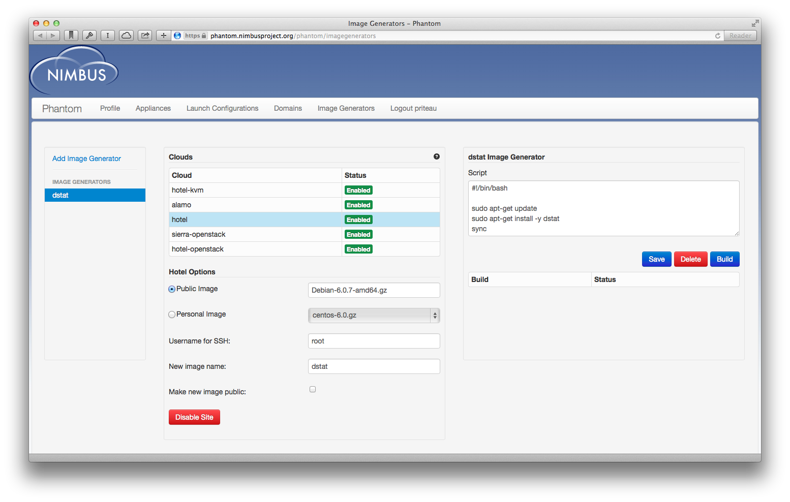
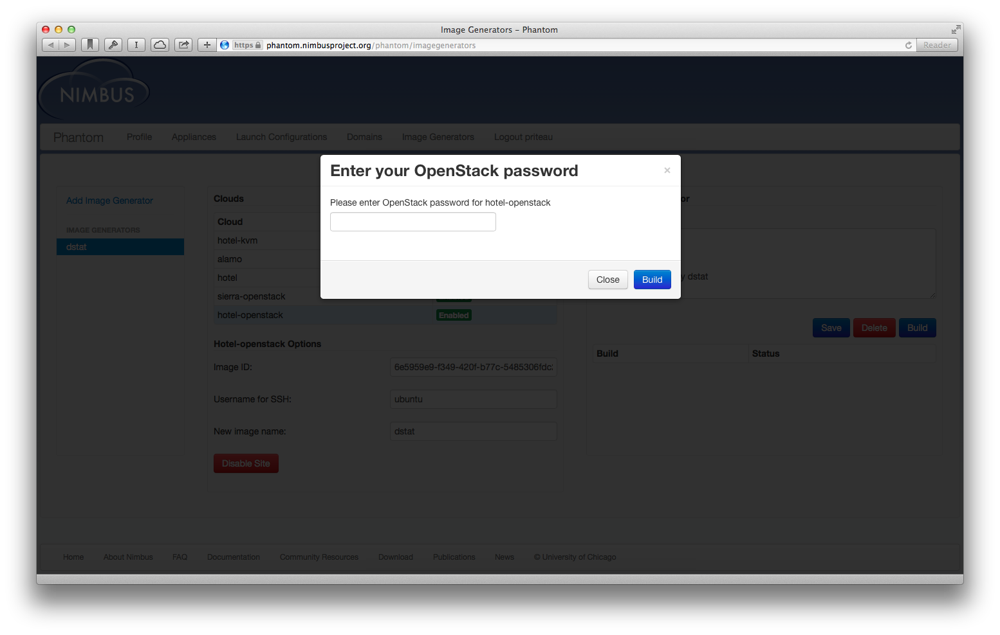
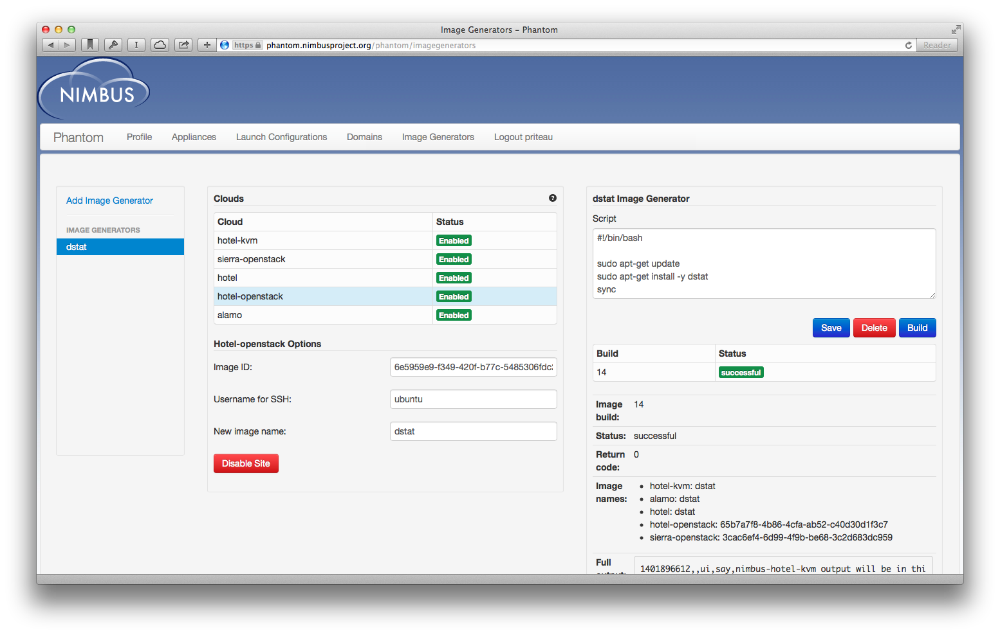
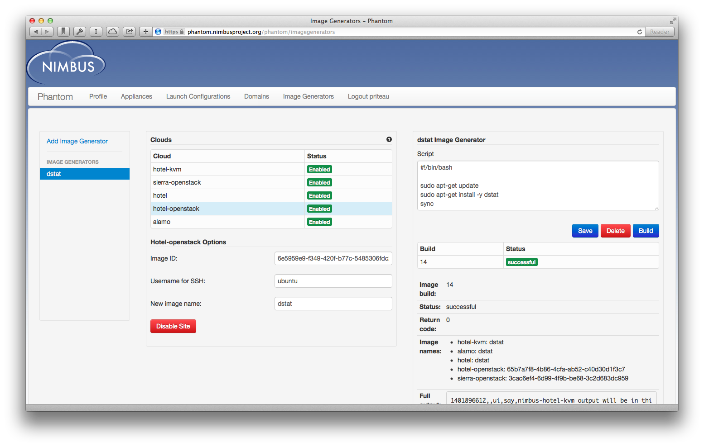

Multi-cloud VM image generation¶
FutureGrid offers access to multiple clouds based on several different technologies (Nimbus, OpenStack, and Eucalyptus) using different hypervisors (Xen or KVM). Users can also supplement the use of FutureGrid resources by bursting out to commercial clouds such as Amazon EC2. While this allows users to use multiple clouds, such access is often hard to leverage as VM images are generally not portable across different formats and cloud providers.
This presents users with a few problems. First, moving from one cloud to another means creating a new image; this is time-consuming and error-prone. Second, users typically want the VM images to represent a consistent environment independently of what type of cloud the image is deployed on; this is hard to achieve using a manual configuration process as even small differences in configuration can have significant consequences. Third, even if the user does produce a set of images that are initially consistent, as images subsequently evolve it is hard to keep track of which changes were applied to which image. In short, the problem is the lack of traceability and repeatability of VM image customizations.
Our multi-cloud image generator aims to solve these problems by providing an interface to specify a customization script that can be used to generate consistent images for many clouds. The service starts out with a set of consistent images uploaded to several clouds, applies them to those images, and creates a new VM image on each cloud.
Our image generator is available at: https://phantom.nimbusproject.org/phantom/imagegenerators
It currently supports the following clouds:
- Nimbus Hotel/Xen
- Nimbus Hotel/KVM
- OpenStack Hotel
- OpenStack India (Havana)
- OpenStack Sierra
- EC2
To get started, you will need a Phantom account. Request one if you don’t already have one.
Next, you will need to provide some additional credentials to Phantom. For technical reasons our image generator is using the Nimbus WSRF interface through the Nimbus cloud client, which requires X.509 certificates and the canonical ID stored in your Nimbus configuration file. For OpenStack, we use the native OpenStack API which requires a username, a password, and a project. An exception is the Hotel OpenStack cloud. Since it uses your FutureGrid portal credentials, the password won’t be stored for security reasons. You will be asked for the Hotel OpenStack password each time you generate an image on this cloud.
Once you have entered those credentials, you will be able to use the image generator. As an example, we will generate an image containing the dstat software which can be used for measuring various system values on a machine. First, click on Add Image Generator. You will be asked for a name, let’s call it dstat.
On the right of the interface, you must provide a shell script containing your customizations. Here, we install dstat with the following commands:
#!/bin/bash
sudo apt-get update
sudo apt-get install -y dstat
sync
Then, you will have to enter the details of the base images you will be using on each cloud, in the center of the interface.
For Nimbus, you can select a public or private image by name. The SSH username will generally be root.
For OpenStack, you need to provide the OpenStack image ID (such as 6e5959e9-f349-420f-b77c-5485306fdc25) which you can find through the web interface of each OpenStack cloud. The SSH username will generally be specific to the base image: ubuntu for Ubuntu images, ec2-user for CentOS and Scientific Linux, etc.

You are now all set! Save the image generator by clicking on Save, then click Build to start generating a new VM image on these four clouds. There is one last action to perform: enter your Hotel OpenStack password (the same as your FutureGrid portal password). It will be asked every time you build an image, for security reasons.
Then, you image generation will show up in orange as submitted. It will take several minutes to run: the process involves launching a VM on each cloud, running the script, and saving the modified image. When it is done, it will switch to a green successful. If there is any issue, it will become failed in red. You can click on the build to see the output of the image generation, such as the name of the VM images on each cloud, or any error in case of failure.
 
